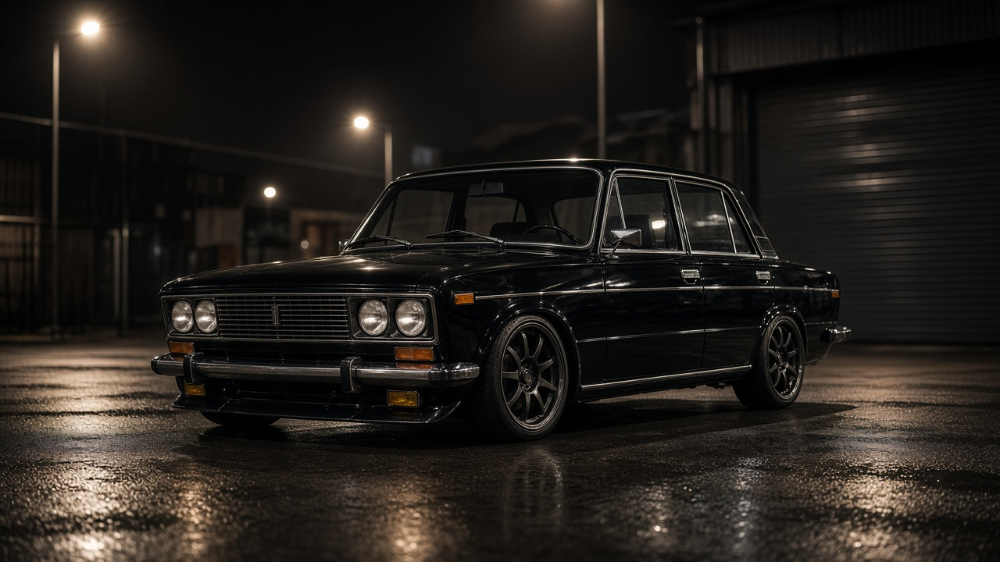
Внешний вид · стенс
Ночная «шестёрка»
Чёрный цвет, узкие диски и мягкая посадка. Машина ездит каждый день — тюнинг без жертвы практичности.
Витрина клуба
Машины участников: от аккуратной реставрации до ночного стенса и дрифт-корчей. Здесь смотрим, что получилось после месяцев в гараже — без рейтинга «кто круче», только живые истории.

Внешний вид · стенс
Чёрный цвет, узкие диски и мягкая посадка. Машина ездит каждый день — тюнинг без жертвы практичности.
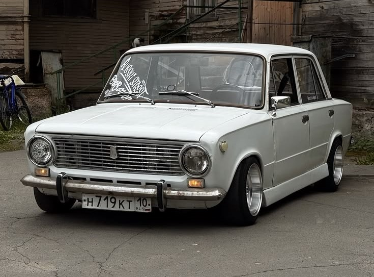
Восстановление · стенс
Белый кузов, глубокие диски и посадка в пол. Классика с характером улицы, а не музейный экспонат.
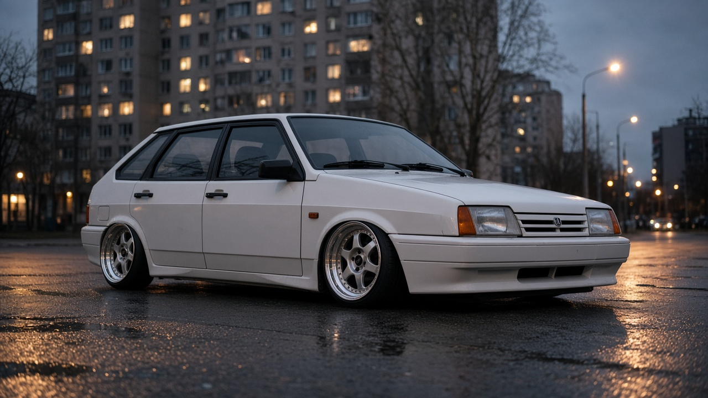
Стенс
Пневма для города и выездов. Утром — клиренс под ямы, вечером — посадка под фото у клуба.
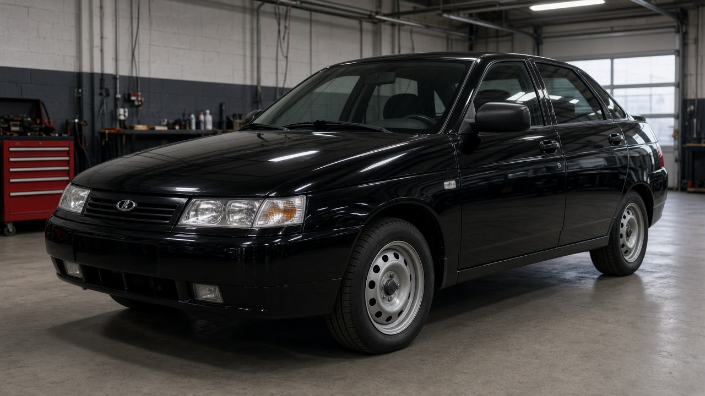
Внешний вид
Полная перекраска, новые уплотнители и аккуратный антикор. Машина снова выглядит цельной.
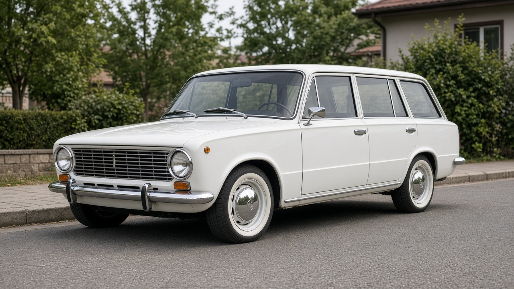
Восстановление · внешний вид
Белый кузов, хром и спокойная посадка. Без стикеров и крика — просто аккуратная классика на каждый день.
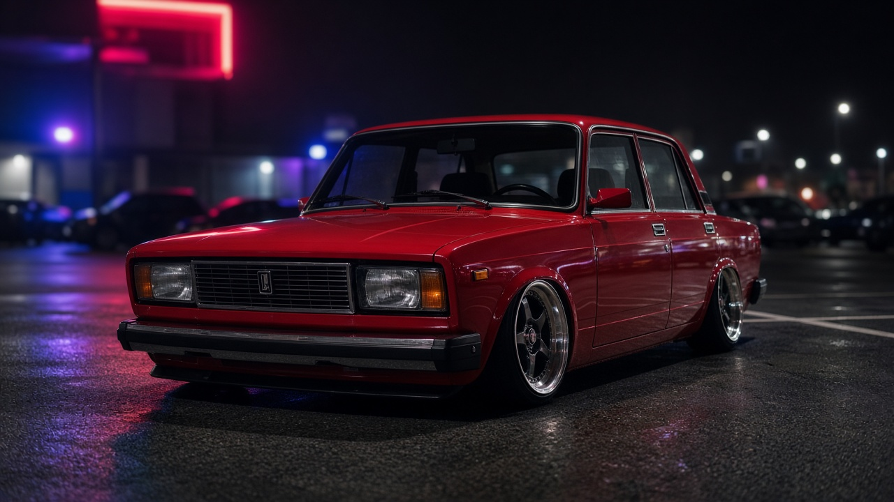
Стенс
Жёсткая посадка, широкие полки и ночные фото. Днём — обычная классика, вечером — витрина клуба.
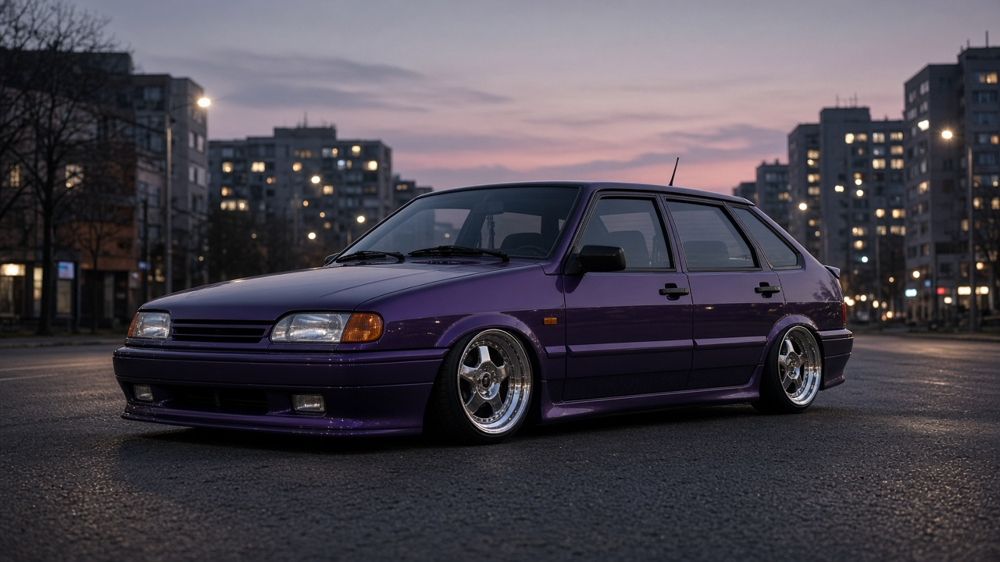
Стенс · внешний вид
Пневма, хром и цвет, который видно за квартал. На выездах собирает взгляды быстрее, чем бензин.
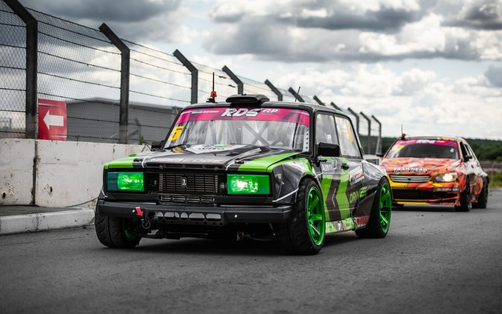
Дрифт корч
Зелёные фары, каркас и ливрея под серию. Корч для трассы, а не для парковки у дома.
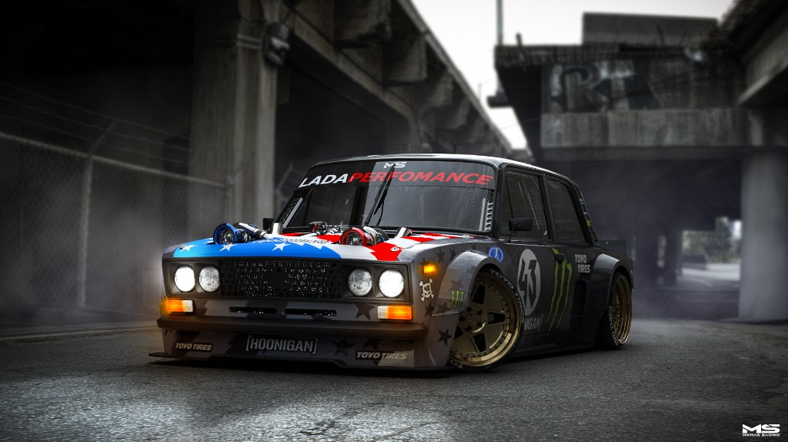
Дрифт корч
Широкий кузов, турбины наружу и золотые диски. Классика в режиме полного безумия.
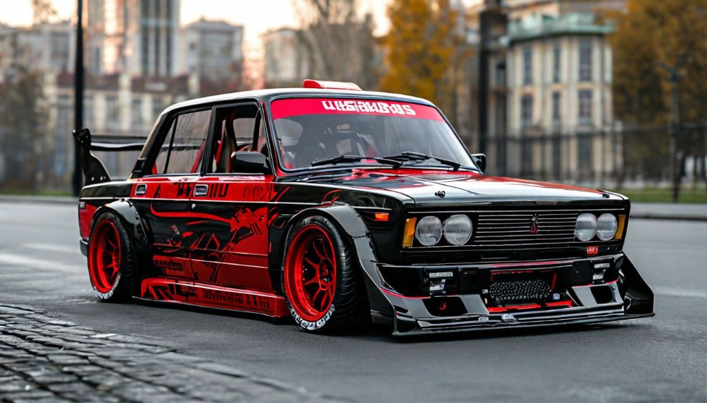
Дрифт корч
Расширители, антикрыло и красный каркас. Городская классика, заточенная под угол.
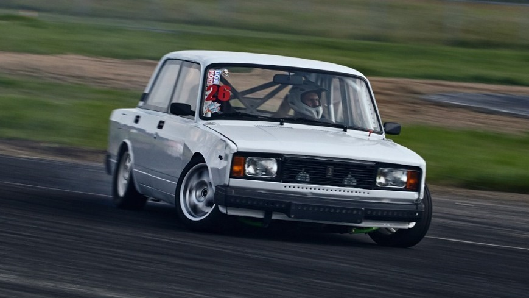
Дрифт корч
Каркас, угол и дырка на крыле. Настоящий корч — живёт на трассе, а не в гараже.
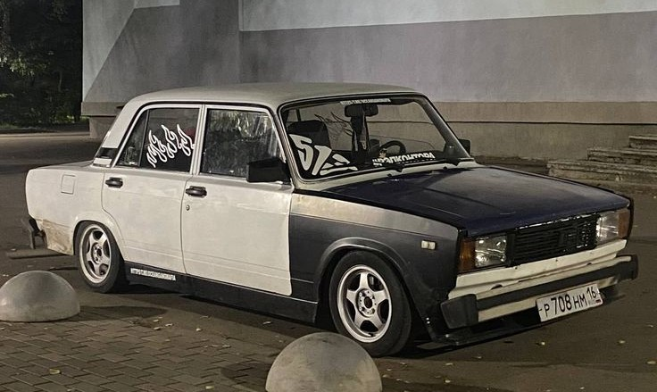
Стритуха
Чёрное крыло, стикеры и ночная стоянка. Боевой вид без прикрас — классика уличного стиля.
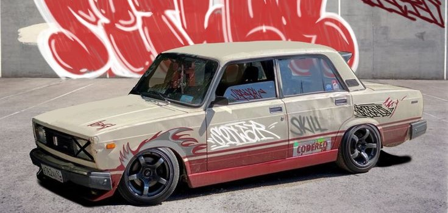
Стритуха
Красный низ, крест на фаре и теги на дверях. Грязная эстетика двора — и этим красиво.
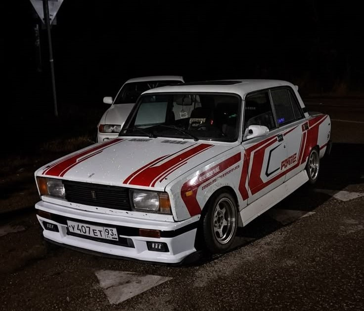
Стритуха
Расширители, ливрея и ковш. Ночная стритуха, которую слышно раньше, чем видно.
В этой категории пока нет проектов.
Пришлите фото и короткую историю машины — добавим в витрину клуба.
Написать в клуб